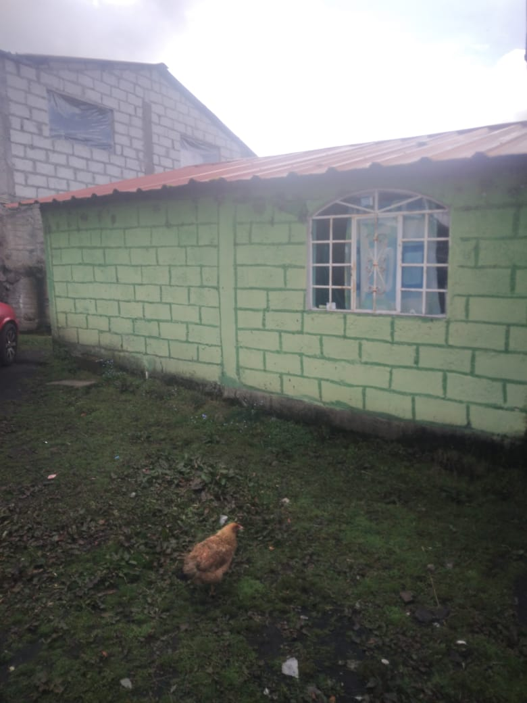
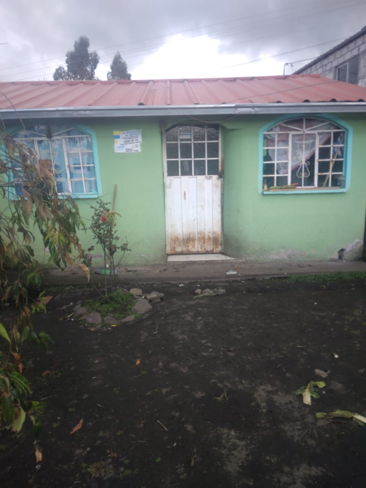
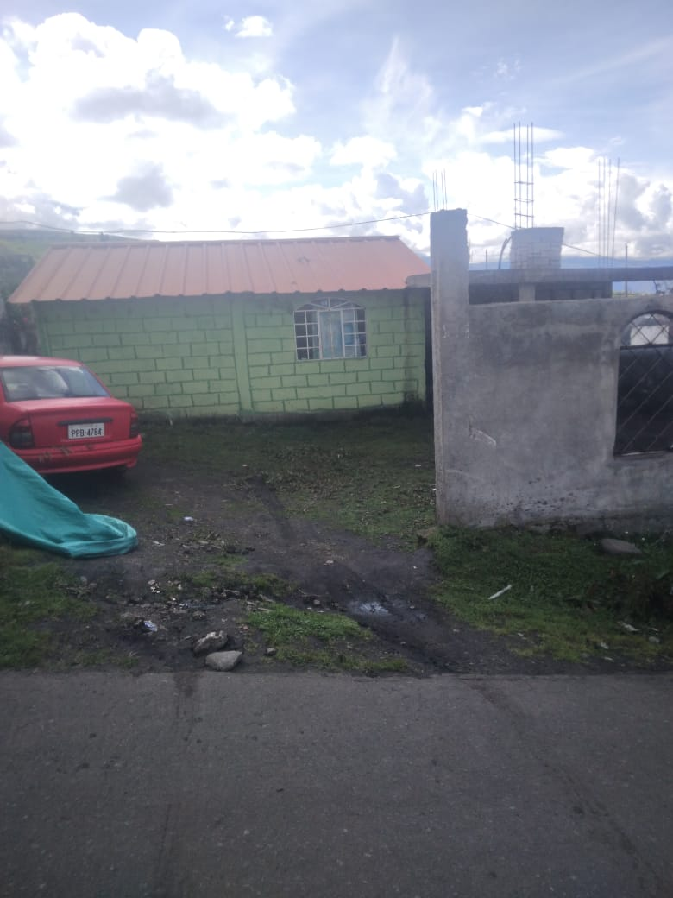
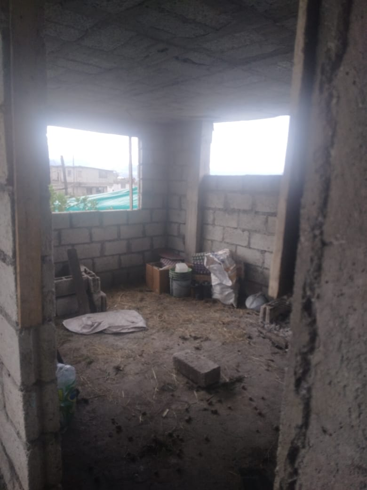

Casa - EC-RJ-155219
EC-RJ-155219 · casa · TISALEO, Tungurahua
★ Oferta destacada





Datos del remate
| Avalúo pericial | $13,544 |
| Tipo de bien | casa |
| Área de construcción | 72.00 m² |
| Área de terreno | 342.56 m² |
| Cantón / Provincia | TISALEO, Tungurahua |
| Dirección / Sector | barrio agua santa, caserío santa lucía bellavista, parroquis matríz, cantón tisaleo, provincia de tungurahua. barrio agua santa, caserío santa lucía bellavista,, parroquia matríz, cantón tisaleo, provincia de tungurahua |
| Señalamiento | Primer Señalamiento |
| Fecha de remate | 2026-08-18 |
| No. de proceso | 18334202200660 |
Análisis vs. mercado
| Avalúo por m² | $188/m² |
| Mediana de mercado en la zona | $670/m² |
| Descuento vs. mercado | 71.9% |
| Comparables usados | 66 |
| Radio de búsqueda | 2000 m |
| Puntaje | 92/100 |
Descripción completa del avalúo
se trata de un terreno con una casa tipo miduvi, otra casa de hormigón armado totalmente incompleta.
lote de terreno con construcciones
barrio agua santa, caserío santa lucía bellavista,, parroquia matríz, cantón tisaleo, provincia de tungurahua
Análisis de inversión (IA)
⚠ Dudosa — revisar bienEl descuento del 71.9% sobre la mediana de mercado suena atractivo, pero el avalúo pericial es muy bajo ($13,544.48) y la descripción revela dos construcciones en estados muy distintos: una casa MIDUVI básica y una de hormigón armado totalmente incompleta. Eso significa que el valor real utilizable hoy es limitado y habría que invertir capital adicional para terminar la segunda construcción. Vale la pena investigar más antes de comprometerse, pero con cautela.
A favor:
- Descuento calculado del 71.9% respecto a la mediana de mercado, basado en 66 comparables, lo que da cierta solidez estadística al cálculo.
- Terreno amplio de 342.56 m², que supera más del doble el área de construcción actual, dejando espacio para desarrollar.
- Ubicación en Tisaleo, Tungurahua, zona con actividad agrícola y cercanía a Ambato, lo que puede sostener demanda local.
- Se incluyen dos unidades (casa MIDUVI + estructura de hormigón), lo que en teoría amplía el potencial del lote.
En contra:
- Avalúo pericial extremadamente bajo ($13,544.48 para 342.56 m² de terreno + dos construcciones), lo que genera dudas sobre el estado real o la ubicación exacta del inmueble.
- La casa de hormigón armado está descrita como 'totalmente incompleta', lo que implica una inversión adicional desconocida para hacerla habitable.
- La casa MIDUVI es una construcción de estándar mínimo, con valor de mercado y calidad constructiva reducidos.
- El precio de mercado de referencia podría estar inflado si los comparables no son estrictamente de la misma zona rural/caserío.
Riesgos a verificar:
- Ubicación en caserío rural (Santa Lucía Bellavista) que puede tener acceso vial limitado o irregular — verificar acceso vehicular.
- Construcción incompleta de hormigón armado: riesgo de que lleve años paralizada, con posible deterioro estructural (oxidación de varillas, humedad en losa, etc.).
- No se menciona si el terreno tiene escritura individual o si forma parte de una sucesión o propiedad compartida — riesgo de derechos y acciones.
- Al tratarse posiblemente de un remate judicial, existe riesgo de ocupantes actuales (posesionarios o arrendatarios) que compliquen la toma de posesión.
- Zona rural de Tungurahua: riesgo volcánico latente (Volcán Tungurahua/Cotopaxi en la región) que puede afectar asegurabilidad y valor de reventa.
- El avalúo pericial tan bajo puede reflejar gravámenes, litigios pendientes o problemas de titulación que no se declaran explícitamente en la descripción.
Generado por IA a partir de la descripción — no es asesoría legal ni financiera.
Esta ficha es una copia de lo publicado en el sitio oficial de remates
judiciales de la Función Judicial del Ecuador, para consulta — no
reemplaza el expediente judicial. remates.funcionjudicial.gob.ec no da
un link propio por remate, por eso se generó esta página aparte.
Antes de ofertar, el expediente debe revisarlo un abogado.